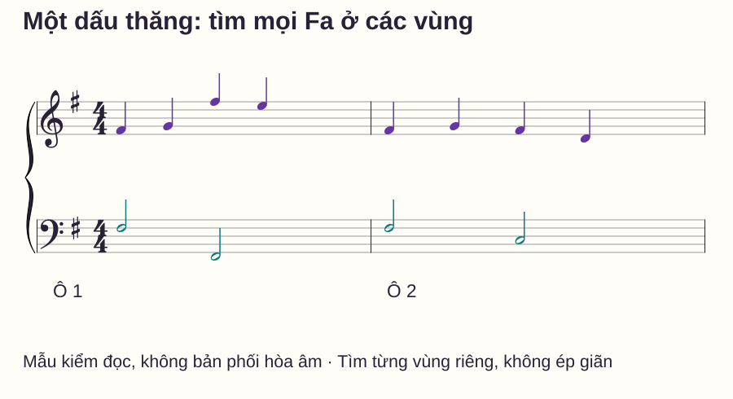
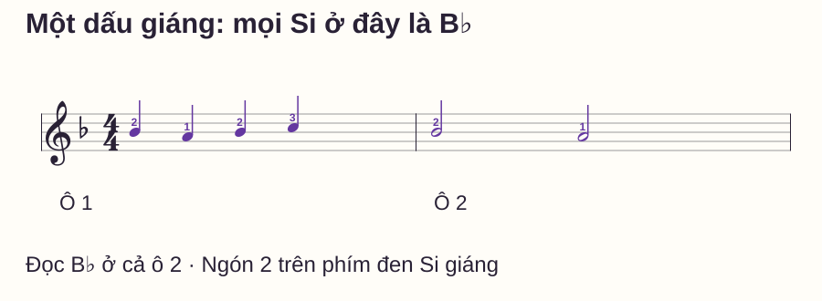
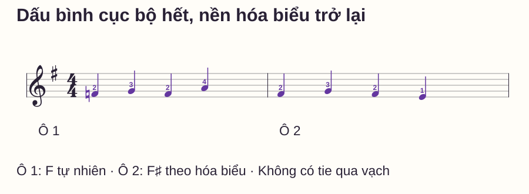

Đọc nhạc
Đọc hóa biểu piano: một dấu thăng hoặc giáng đổi nốt nào?
# Đọc hóa biểu piano: một dấu thăng hoặc giáng đổi nốt nào?
Bạn thấy dấu thăng nằm cạnh khóa Sol, nhưng các nốt Fa bên trong ô không có dấu nào trước đầu nốt. Nếu chỉ kiểm ký hiệu sát từng nốt, bạn có thể chơi nhầm F tự nhiên suốt câu dù đã nhận đúng tên dòng/khe.
Bài này chỉ học hai trường hợp: một dấu thăng F♯ và một dấu giáng B♭. Bạn sẽ đọc ở nhiều quãng tám, xem hai khóa và kiểm cách một dấu bình cục bộ thay đổi nền hóa biểu. Chưa cần học thuộc toàn bộ vòng quãng năm để bắt đầu đọc đúng các ví dụ.
Trả lời nhanh
Hóa biểu đặt sau khóa nhạc, trước số chỉ nhịp ở đầu bản, quy định nền thăng/giáng cho các tên nốt trong phạm vi áp dụng. Một dấu thăng là F♯: các Fa ở mọi quãng tám liên quan đều đọc thăng, không chỉ vị trí có ký hiệu. Một dấu giáng là B♭: các Si đọc giáng. Khác dấu hóa bất thường, hóa biểu không tự hết khi qua vạch ô. Nếu F♮ xuất hiện trong bản có F♯ ở hóa biểu, đọc F tự nhiên theo phạm vi dấu cục bộ; sang ô mới lại theo F♯, trừ khi có chỉ dẫn thay khác.
Bắt đầu từ vị trí và tên nốt bị đổi
Open Music Theory — Major Scales, Scale Degrees, and Key Signatures giải thích hóa biểu tập hợp các dấu ở đầu khuông và áp dụng cho tên nốt ở mọi quãng tám. Bước đọc cần làm là nhận dấu thuộc tên nốt nào, rồi kiểm tên đó trong câu, không chỉ ghi nhớ “bài có một phím đen”.
C4 là Đô giữa; F4 là Fa phía trên C4, F5 cao hơn F4 một quãng tám. B4 là Si ngay dưới C5. Ký hiệu F♯4 chỉ Fa thăng ở vùng 4, B♭4 chỉ Si giáng ở vùng 4.
| Hóa biểu đang học | Nền cao độ cần nhớ | Qua vạch ô có tự hết không? |
|---|---|---|
| Một dấu thăng | F → F♯ ở mọi quãng tám trong phạm vi đọc | Không |
| Một dấu giáng | B → B♭ ở mọi quãng tám trong phạm vi đọc | Không |
Với khóa khác nhau, vị trí trên khuông của cùng tên nốt thay đổi. Vì vậy phải đọc khóa trước khi xác định dấu. Khi bản nhạc đổi hóa biểu hoặc có ký hiệu đặc biệt, cần đọc lại nền mới; bài này không dùng thay hóa biểu giữa câu.
Mẫu 1: một dấu F♯ có tác dụng ở cả hai khuông

Hãy chỉ từng Fa và nói đủ tên trước khi chơi. Phải ô 1 đọc F♯4–G4–F♯5–E5; trái ô 1 đọc F♯3 trắng rồi F♯2 trắng. Sang ô 2, các Fa vẫn thăng dù đầu nốt không in lại dấu.
Nếu muốn tìm trên đàn, đặt từng đích riêng khi chưa chạy nhịp. Không cần ghép hai tay để chứng minh bạn hiểu quy tắc; đây là bài đọc nhiều vùng. Nếu chơi một bè, vẫn phải chuyển tay để tới đích thay vì cố giãn phủ cả quãng tám.
Điều cần kiểm là không bỏ các Fa thấp hơn hoặc cao hơn vị trí in dấu. G4, E5, D4 và C3 không tự bị thăng chỉ vì chúng đứng cạnh một Fa thăng; nền một dấu chỉ đổi tên F.
Mẫu 2: một dấu giáng là B♭
Mẫu khóa Sol dưới đây chỉ dùng vùng hẹp A4–C5. Đặt phải ngón 1 trên A4, 2 trên B♭4 và 3 trên C5. Ngón 2 bấm phím đen Si giáng, không phải B4 trắng; ngón 1 là cái.

| Ô | Cao độ thực hiện | Ngón phải | Thời gian |
|---|---|---|---|
| 1 | B♭4–A4–B♭4–C5 | 2–1–2–3 | Mỗi nốt một phách |
| 2 | B♭4–A4 | 2–1 | Mỗi nốt hai phách |
Đọc lại từ đầu ô 2 mà không chơi ô 1 trước. Nếu bạn phải nghe hết câu mới nhớ Si giáng, hãy quay lại kiểm hóa biểu của đoạn; mục tiêu là có thể xác định nền khi bắt ở một vị trí mới, không chỉ nhớ thứ tự phím đã tập.
Hóa biểu không phải kết luận đầy đủ về giọng
Một dấu thăng là hóa biểu dùng cho Sol trưởng và Mi thứ; một dấu giáng dùng cho Fa trưởng và Rê thứ. Cần thêm ngữ cảnh câu, trung tâm âm và hòa âm để xác định giọng cụ thể. Không chỉ nhìn dấu rồi kết luận tất cả bản có một thăng đều là Sol trưởng.
OpenLearn — An introduction to music theory, phần giọng thứ tương đối và dấu hóa, giúp đối chiếu việc dùng chung hóa biểu và sự khác nhau giữa nền với thay đổi cục bộ.
Trong các bài tập ở đây, nhiệm vụ là tìm đúng phím theo ký âm. Chưa yêu cầu phân tích giọng từ những chuỗi ngắn được viết để kiểm đọc. Những mẫu ấy không đủ làm một bản phối hoàn chỉnh hoặc chứng minh trung tâm âm.
Mẫu 3: dấu bình thay nền trong một ô
Dấu hóa bất thường đặt ngay trước nốt và có phạm vi cục bộ theo quy tắc đang học: cùng tên, cùng quãng tám trong ô, tới khi được dấu khác thay hoặc tới vạch. Hóa biểu là nền để trở về khi dấu cục bộ hết hiệu lực; không phải cứ qua vạch là về phím trắng.

Tự gọi tám cao độ trước khi mở đáp án. Hãy giải thích riêng ô 1 phách 3 và ô 2 phách 1: cả hai đầu nốt đều không có dấu sát trước, nhưng có chơi cùng phím không?
Đáp án và lý do
Ô 1: F4–G4–F4–A4; ô 2: F♯4–G4–F♯4–E4. Dấu bình ở đầu ô 1 áp dụng tiếp tới F4 phách 3. Qua vạch, dấu bình cục bộ hết và nền F♯ trở lại ở ô 2. Do đó hai Fa được hỏi không cùng phím. Ngón 2 cần đặt F trắng trong ô đầu và F♯ đen trong ô sau.
Trước khi chạy nhịp, tìm riêng F4 và F♯4 bằng cùng ngón 2. Khi chơi hai ô, không đổi phím sớm ở Fa cuối ô 1; nó vẫn tự nhiên. Không dùng pedal để nối hai vùng và che chỗ chưa đọc chắc.
Cách kiểm khi gặp một đoạn mới
Đọc khóa trước, sau đó nói nền bằng tên cụ thể: “mọi Fa thăng” hoặc “mọi Si giáng”. Xem trong đoạn có dấu cục bộ nào thay nền không. Gọi đủ tên và quãng tám của vài nốt mục tiêu, rồi mới thực hiện nhịp và ngón.
Sau khi chơi, kiểm bằng cách bắt trực tiếp từ ô sau. Nếu chỉ đúng khi chạy từ đầu, cần học lại nền ở vị trí bắt mới. Khi thay khóa hoặc gặp khuông mới, xác nhận lại thông tin thay vì suy theo vị trí mắt vừa nhớ.
Routine mười phút và các lỗi thường gặp
- 0–2 phút: nhận tên nốt ở hai hóa biểu, nói phạm vi qua ô/quãng tám.
- 2–4 phút: đọc từng bè mẫu một thăng, chỉ mọi Fa được đổi.
- 4–6 phút: chơi mẫu một giáng và bắt riêng từ ô 2.
- 6–8 phút: đọc mẫu dấu bình trước đáp án rồi tìm đúng hai phím Fa.
- 8–10 phút: thử lại một ô còn nhầm và ghi nền/dấu cục bộ cần nhớ.
| Lỗi | Câu hỏi kiểm | Thử sửa |
|---|---|---|
| Chỉ F5 thăng, F4 vẫn tự nhiên | Có nhầm vị trí ký hiệu là giới hạn quãng tám? | Chỉ các Fa ở nhiều vùng trước khi chơi |
| Ô sau trở lại Si tự nhiên | Có coi hóa biểu như dấu cục bộ? | Bắt trực tiếp ô sau và nói nền B♭ |
| F4 sau dấu bình lại thăng ngay trong ô | Có cho dấu bình chỉ tác động một nốt? | Theo dõi cùng F4 tới vạch |
| Qua vạch vẫn F tự nhiên | Có quên trở về nền? | Nói “ô mới, nền F♯” trước lượt thử |
Mở rộng khi đọc được các nốt mục tiêu ở hai khóa, giải thích được hai Fa không cùng phím trong mẫu 3 và bắt được từ ô sau. Sau đó mới thêm hóa biểu hai dấu, đổi hóa biểu hoặc tình huống nốt nối qua vạch; chưa cần gộp chúng vào một buổi.
Đọc thêm
Dấu thăng, giáng, bình giải thích dấu cục bộ. Khóa Sol và khóa Fa giúp đọc đúng tên nốt trước khi áp nền hóa biểu.
Khi đã gọi đúng các cao độ, bài tập với metronome giúp ghép chúng với mốc thời gian mà không biến mọi click thành tiếng đàn mới.
Câu hỏi thường gặp
Một dấu thăng có thể là thăng Do không?
Trong hệ hóa biểu chuẩn đang học, một dấu thăng là F♯; một dấu giáng là B♭. Không chọn tùy ý tên nốt chỉ vì số lượng dấu bằng một.
Hóa biểu có áp dụng cho cả tay trái không?
Đọc hóa biểu của mỗi khuông. Trong khuông kép mẫu 1, cả hai khóa có cùng nền F♯ nên các Fa bên trái cũng thăng, dù ở vùng thấp.
Đổi quãng tám có làm dấu trong hóa biểu hết tác dụng không?
Không. Hóa biểu áp dụng cho tên nốt ở các quãng tám trong phạm vi của nó; đây là điểm khác dấu cục bộ đang học.
Một dấu thăng có luôn là giọng Sol trưởng không?
Không. Mi thứ dùng cùng hóa biểu. Cần ngữ cảnh âm nhạc để xác định giọng; bài này tập đọc cao độ trước.
Dấu bình có xóa cả hóa biểu của bản nhạc không?
Không. Nó thay cao độ theo phạm vi cục bộ. Nền hóa biểu vẫn là căn cứ sau khi dấu cục bộ hết hiệu lực, trừ chỉ dẫn thay khác.
Có cần học hết vòng quãng năm rồi mới chơi bài có hóa biểu không?
Không cần chờ thuộc toàn bộ vòng để đọc hai trường hợp này. Học rõ tên nốt bị đổi và kiểm trong câu ngắn; lý thuyết hệ thống có thể mở rộng sau.
Nguồn và ghi chú biên soạn
- Open Music Theory — Major Scales, Scale Degrees, and Key Signatures: vị trí/phạm vi hóa biểu và trường hợp một dấu. Kiểm ngày 28/10/2026.
- OpenLearn — An introduction to music theory, mục 5.10 và 6.2: giọng thứ tương đối và dấu hóa cục bộ.
- Các chuỗi nốt, hình, ngón, quy trình và routine tự biên soạn; chưa có giáo viên độc lập review hoặc thử nghiệm học viên. Không chép sheet nguồn hoặc dùng mẫu kiểm đọc để khẳng định giọng của một tác phẩm.